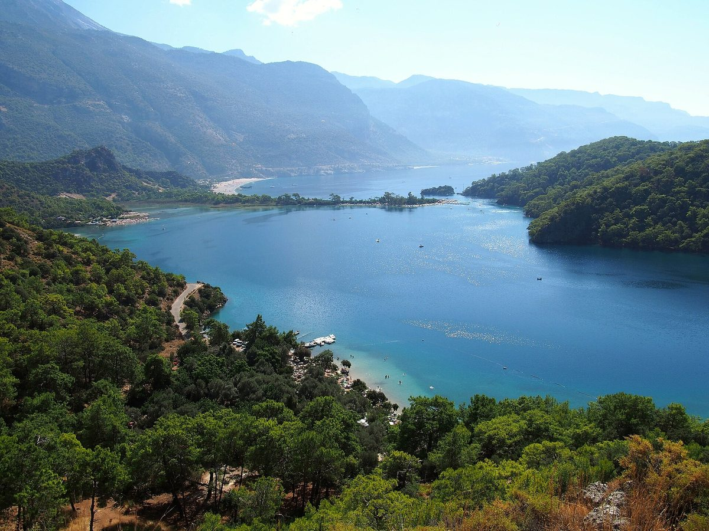
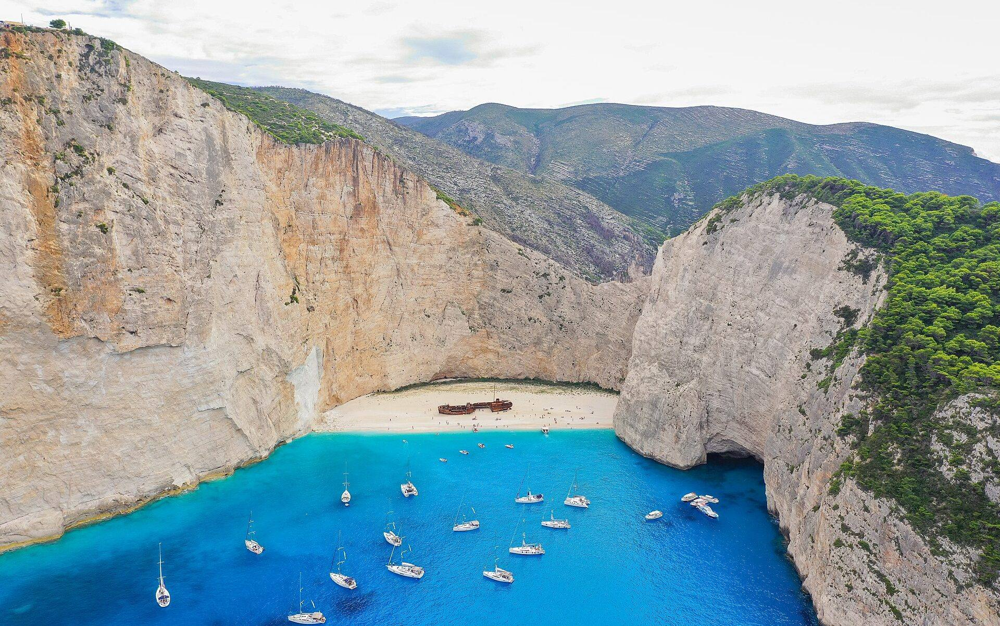
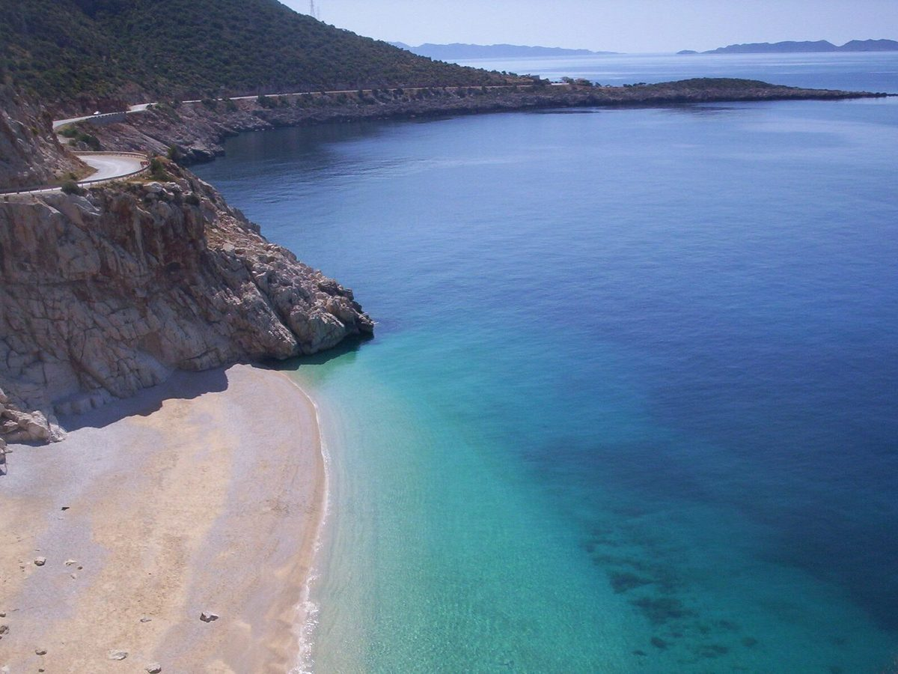
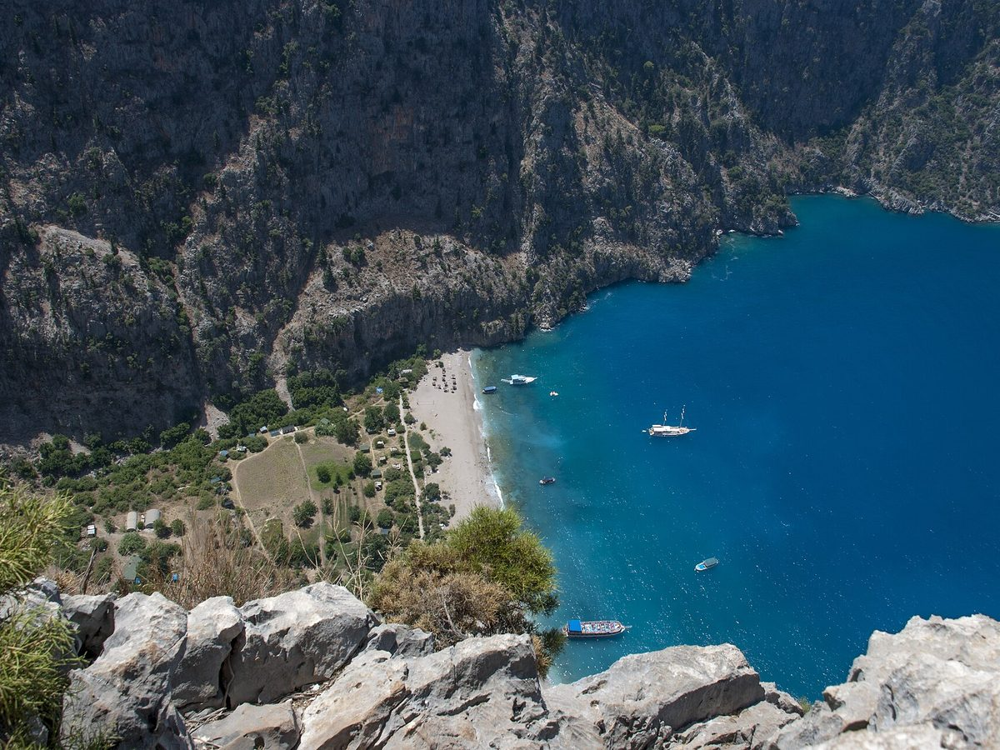
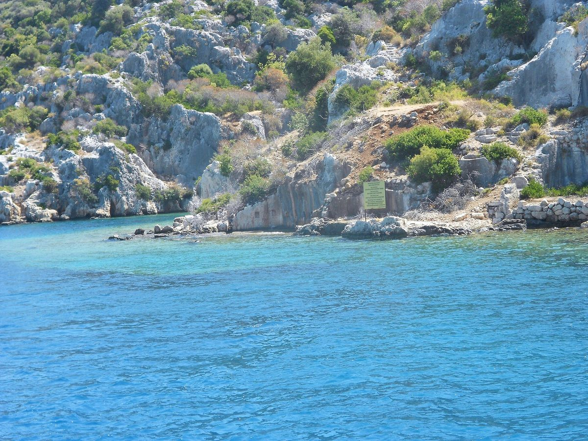
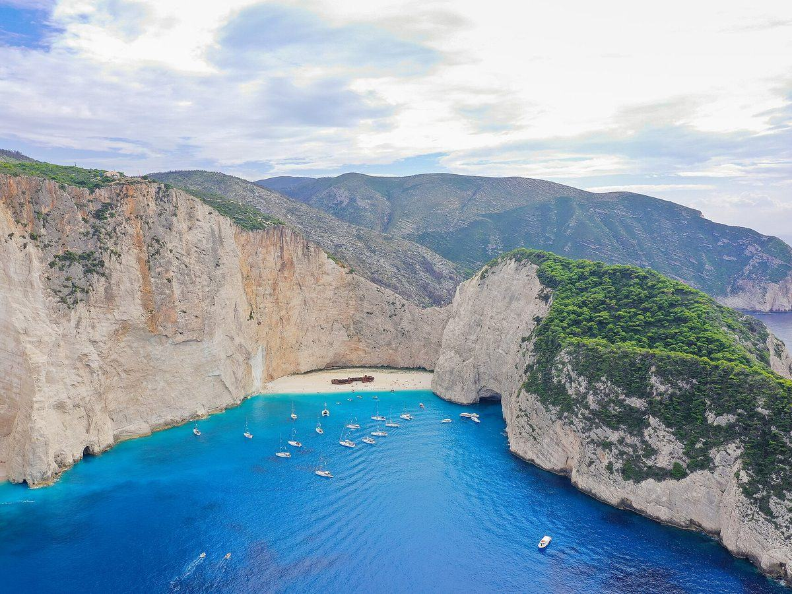

Fethiye · Muğla
Ölüdeniz
Lagünün durgun turkuaz suyu ve Babadağ’ın gölgesi. Lagün tabiat parkıdır; teknenizle yaklaşmadan önce kurallarını kontrol edin.

Türkiye, Yunanistan ve Hırvatistan kıyılarında 9.310 koy ve plaj. Bir bölge seçin; en yakın koylar mesafesi ve yönüyle sıralansın, o anki rüzgâra göre en korunaklısını seçin.
Kartpostallardan tanıdığınız koylar. Birini seçin; çevresindeki tüm koyları bulucuda açalım, ya da o noktanın hava raporuna bakın.

Lagünün durgun turkuaz suyu ve Babadağ’ın gölgesi. Lagün tabiat parkıdır; teknenizle yaklaşmadan önce kurallarını kontrol edin.

Kalkan ile Kaş arasında, yüksek kayalıkların dibinde ince kumlu bir koy. Suyun rengi günün saatine göre maviden zümrüte döner.

Yalnızca denizden ya da sarp bir patikadan ulaşılan vadi; yazın Jersey kaplanı kelebeklerine ev sahipliği yapar.

Adanın kıyısında suya gömülü antik Likya kenti. Batık şehrin üzerinde yüzmek ve dalmak yasaktır; kalıntıları tekneden izleyin.

Kleopatra plajının efsanevi ince kumu koruma altındadır; plajda ve çevresinde kurallara uyulması gerekir.

Dik beyaz kayalıklarla çevrili, yalnızca denizden ulaşılan koy; kumsalda 1980’den beri bir gemi enkazı yatar. Kayalıklar nedeniyle kumsala çıkış kısıtlanabilir.
Bir ülke ve bölge seçin, haritada dilediğiniz noktaya dokunun ya da konumunuzu paylaşın. Çevresindeki koylar haritada belirsin; mesafesi ve yönüyle sıralansın.
Haritada bir noktaya dokunun; orayı merkez alalım.
Güzel bir koyu, iyi bir demir yerinden ayıran dört alışkanlık.
Koyun ağzı rüzgârın estiği yöne açıksa dalga içeri girer. Rüzgâr tarafı karayla kapalı koyu seçin; gece dönebilecek rüzgârı da hesaba katın.
Posidonia çayırları suyu berrak tutan, çok yavaş büyüyen bir ekosistemdir. Demiri kumlu zemine bırakın, çayırın üzerinde zincir sürüklemeyin.
Derinliğin en az üç ila beş katı zincir verin ve demirin tuttuğunu geri vitesle deneyin. Kıyıya halat verecekseniz ağaca ve kayaya zarar vermeyin.
Şamandıralı yüzme alanlarına ve Mavi Bayraklı plajların önüne motorla girmeyin; koy içinde yavaşlayın, sudaki yüzücülere dikkat edin.
Bu sayfa planlamanız için. Teknedeyken ihtiyaç duyacağınız her şey ise iPhone ve iPad uygulamamızda: seyir defteri, kontrol listeleri, tekne kaydı ve acil durum ekranı.
Koy ve plaj verileri © OpenStreetMap katkıda bulunanları (ODbL), 2026; Mavi Bayrak listesi FEE, 2026 sezonu; rüzgâr Open-Meteo (CC BY 4.0). Liste seyir planlaması içindir, deniz haritasının ve yerel kuralların yerine geçmez. Harita OpenFreeMap · © OpenMapTiles · © OpenStreetMap katkıda bulunanları. Konumunuzu kullanırsanız mesafeler tarayıcınızda hesaplanır; konum yalnızca rüzgâr bilgisi için Open-Meteo’ya iletilir.